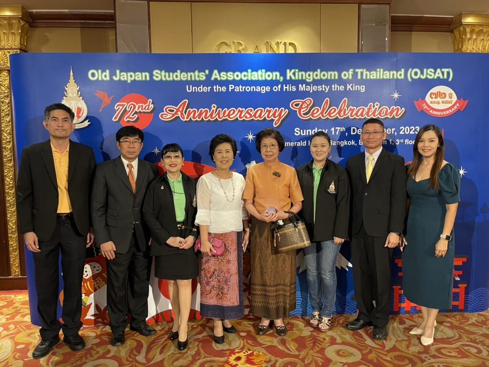

งานฉลองครบรอบ 72 ปี สมาคมนักเรียนเก่าญี่ปุ่นฯ กรุงเทพฯ
เนื้อหาตามประกาศ ณ วันที่เผยแพร่ โปรดตรวจสอบกำหนดการและเงื่อนไขก่อนดำเนินการ
เมื่อวันอาทิตย์ที่ 17 ธันวาคม 2566 ผศ.นาฎยา ตนานนท์ (ที่ปรึกษาคณะกรรมการบริหารฯ) และ น.อ.ปรเมษฐ์ ศิริตานนท์ (รองประธานฝ่ายวิเทศสัมพันธ์และเทคโนโลยีสารสนเทศ)และภรรยา เป็นตัวแทนคณะกรรมการบริหารสมาคมฯ เข้าร่วมงานร่วมงานฉลองครบรอบ 72 ปี สมาคมนักเรียนเก่าญี่ปุ่นฯ กรุงเทพฯ ณ โรงแรม ดิเอมเมอรัลด์ กรุงเทพฯ

